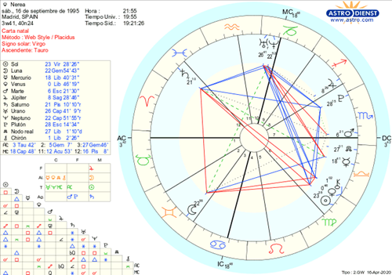

Astrología y Numerología
Astrología
La astrología estudia la posición, movimiento y comportamiento de los astros, conformando asi una referencia entre sus conductas y las personas. Cada movimiento planetario puede afectar o influenciar nuestras emociones, pensamientos y formas de percibir la vida.
Es decir, que interpreta acontecimientos en el cielo y permite conocer cómo se desarrollarán ciertas situaciones.
Se basa en el análisis de la carta natal (mapa de los astros al momento de nuestro nacimiento) para comprender cada aspecto de nuestra personalidad, etapa de nuestra vida y formas de vincularnos.
Así mismo, es posible estar atentos a los cambios astrológicos del día a día y la predisposición a diversas situaciones que puedan presentarse.
Numerología
La numerología estudia la relación entre los números, los seres vivos y las fuerzas físicas o espirituales.
Los números son uno de los conceptos más perfectos y elevados.

La numerología es la disciplina que analiza la vibración oculta de ese código y enseña a utilizar los números en su beneficio, mediante el estudio de su influencia sobre los seres vivos.
Cada número tiene un significado y ciertas características que designan cosas. Por ejemplo, con la suma de los dígitos de nuestra fecha de nacimiento vamos a obtener un número del 1 al 9. Si es mayor, se tendrá que sumar los números que componen el número, y según el número que te salga tendrás una descripción de tu personalidad, habilidades, debilidades, cómo nos relacionamos con otros, sucesos que quizá pasarán en nuestra vida y la misión de vida que tenemos, etc.